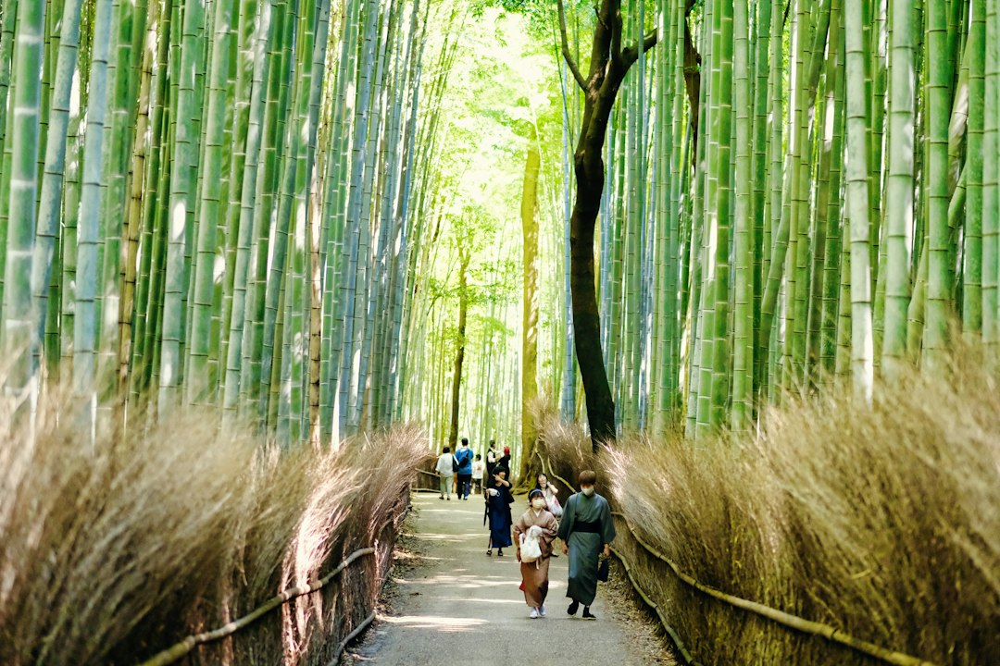

Notes from Korea

Early morning in Kyoto is peaceful and serene. The trees sway gently in the wind and the sun rises over the mountains.
walking in the quiet forest I felt a sense of calm and tranquility. The fresh air and natural scenery were a welcome break from the hustle. and bustle of city life.
After leaving the bamboo grove, I continued exploring Kyoto and discovered more beautiful temples and traditional Japanese streets.